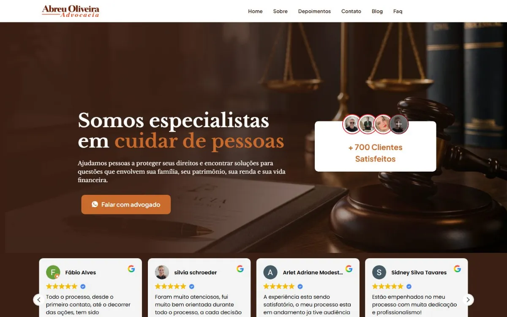

1
Web Design
- Sites institucionais
- Landing pages
- Design responsivo
- WordPress / Elementor
- Otimização de conversão
- CRO e testes A/B
Sites, landing pages e interfaces que transformam visitas em clientes. Desde 2019, com clientes no Brasil, em Londres e em Madri.
Ver trabalhos

Sou Pedro Henrique, Web Designer e UX/UI Designer, e acredito que um bom design vai muito além da estética. Ele simplifica a complexidade, transmite confiança e torna as experiências digitais mais intuitivas e naturais.
Trabalho no desenvolvimento de plataformas SaaS, websites, landing pages e interfaces mobile, combinando design centrado no usuário, estratégia visual e otimização de conversão para transformar ideias complexas em produtos digitais funcionais, relevantes e que geram valor real.
Ferramentas Figma · Framer · WordPress · Elementor · Photoshop · Illustrator · HubSpot · IA
Cada projeto une estratégia, interface e marca para gerar resultado real, não só uma tela bonita.
Procuro uma posição como Web Designer. Me chame no LinkedIn ou no WhatsApp.
ou escreva para pedro.jobs2896@gmail.com